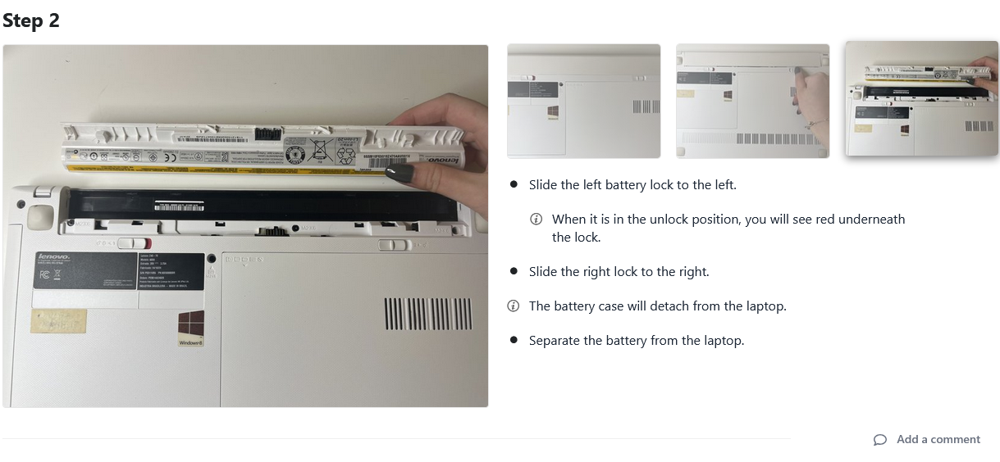
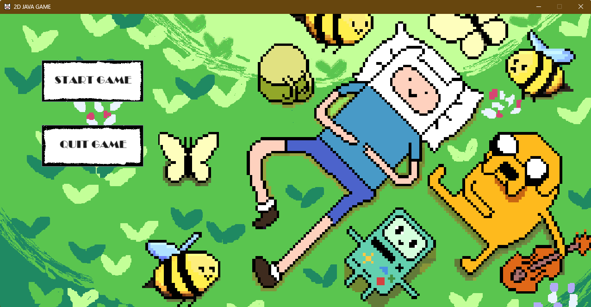
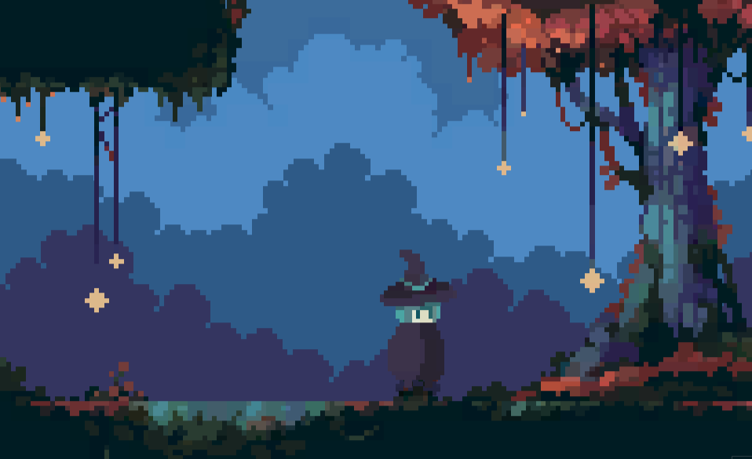

✩ projects ✩

On iFixit, I created a guide on how to replace a hard disk drive of a specific laptop model.
Combining my new technical writing skills and photo-taking techniques learned from my writing
class,
I provided quality instructions and visuals that are easy and understand for all audiences.

My friends, Lamia and Furqan, and I developed a simple game in Java. This game is inspired by
the cartoon Adventure Time and features unique art—drawn by ourselves—, sound effects, and a few
different
maps and enemies. (Shoutout to Lamia for working hard on this project!)

In my game design introductory class, I started the development of a game using free assets and
simple scripts. This game is not nearly finished yet, as it needs polishing and more features
such as monster movement and random spawn of collectibles. So far it contains character
animation, a calm music, and working gameplay mechanics.